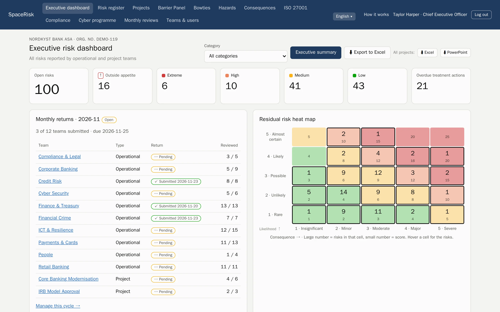
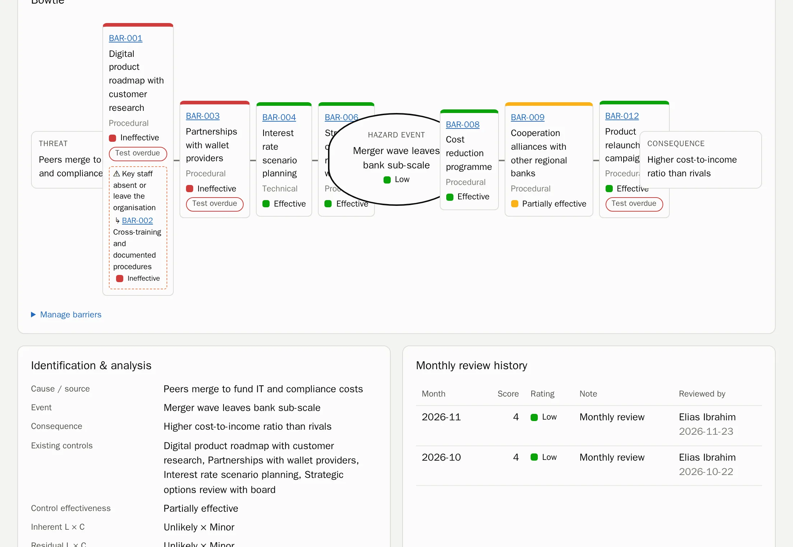
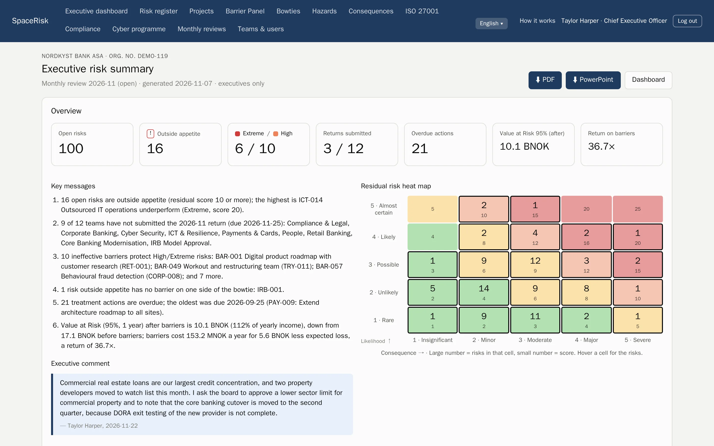
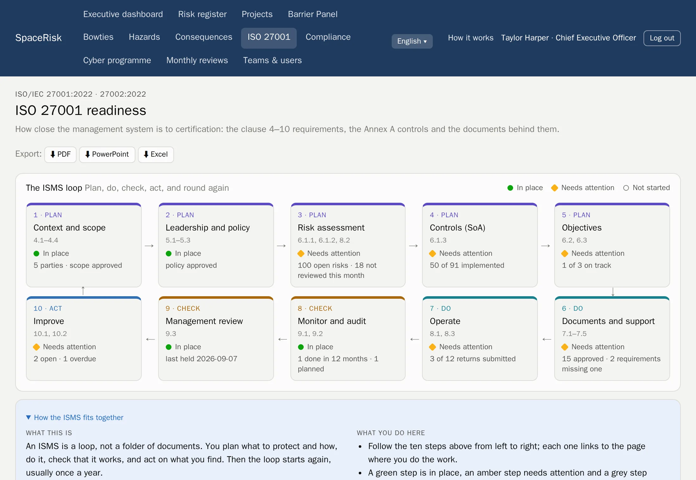
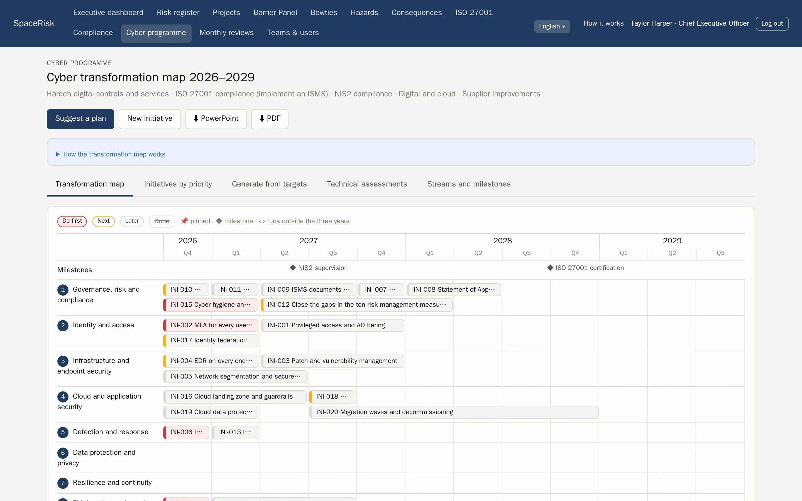

ISO 31000 risk management
Every risk, from the team floor to the boardroom.
SpaceRisk turns the risks your teams know about into living bowties, checks the barriers that stop them every month, and shows the board what it would cost.
Create and protect value.
- 5
- steps of the ISO 31000 loop, run as one monthly rhythm
- 93
- ISO 27002 controls in the ISO 27001 module
- 92
- showcase companies to explore, from banks to hospitals
- 7
- languages, for every user
01 Risk signals
Risk signals from your people and your operations. Clear updates for the top.
Individuals and teams record what can go wrong where they work. Your plants, networks, cloud and identity systems add what the tools see. SpaceRisk gathers it into one enterprise risk picture and sends clear updates to the CEO and the CISO.
Your people
- Individuals
- Teams
Your operations
- OT plants
- IT networks
- Cloud production
- Identity
- Risk signals
- SpaceRisk
- Updates to the CEO and the CISO

02 How it works
The ISO 31000 loop, built into the month.
No separate risk project that goes stale. SpaceRisk runs the standard as a simple monthly rhythm that every team can follow.
- 01
Set the criteria
One scale for likelihood and consequence, your appetite and your categories.
- 02
Identify
Teams and projects record what can go wrong, where they work.
- 03
Analyse and evaluate
Inherent, residual and target ratings, against the appetite.
- 04
Treat
Barriers and actions with owners and deadlines.
- 05
Monitor and review
Every month each team reviews its risks, checks its barriers and submits its return.
03 Bowties and barriers
See what stands between a threat and the damage.
Each risk is a bowtie: the threats on the left, the consequences on the right, and the barriers in between. Barriers live in one shared registry, so one control can protect many risks, and you see at once when a weak one carries too much.
- Preventive and mitigating barriers, with effectiveness and the date each was last tested
- A Barrier Panel for the whole organisation, grouped by owning team or type
- Escalation factors, and the barriers that protect the barriers

04 Monthly reviews
One rhythm for every team.
Each month the team reviews every risk it owns and checks every barrier, then the team lead submits the return. You always know who is up to date, and the trend of every risk builds itself.
- Team and project dashboards, with a heat map and the trend for each risk
- Returns that can only be submitted once every risk is reviewed
- A comment for every month, and a full history for the auditor
- Review every risk
- Check every barrier the team owns
- Add a comment for the month
- Submit the return
05 For the board
Risk in the language of the board.
SpaceRisk puts a price on exposure: expected loss, a simulated Value at Risk before and after barriers, and the return on what the barriers cost. The executive summary writes its own key messages and is ready to present.
Value at Risk
VaR 95 %
Simulated, before and after barriers.
Executive summary
1 click
As PDF or PowerPoint, ready to present.
Every register
Excel
Exported and ready to analyse.

06 Compliance
Two modules. One management system.
Add the ISO 27001 module, the Compliance module or both. Each framework shows its loop with live progress and your next steps, and they share one set of registers: interested parties, legal obligations, objectives, documents, audits, management reviews, nonconformities, incidents and suppliers.
- Each requirement shows the ISO 27001 controls that already cover the same work
- Every framework exports to PDF, PowerPoint and Excel, and joins the executive summary
- Overdue regulatory reports show on the executive dashboard
ISO 27001 module
- ISO/IEC 27001 and 27002 Clauses 4–10, all 93 controls, a Statement of Applicability, the ISMS loop and audit-ready exports. Includes the cyber programme.
Compliance module
- ISO 22301 and ISO 45001 Business impact analysis with RTO and RPO, continuity exercises, worker consultation and the hierarchy of controls.
- NIS2 and DORA Incident reporting clocks, the supplier register and register of information, and resilience testing. With the Norwegian acts.
- GDPR and ISO 27701 Records of processing, DPIAs and data subject requests with their one-month deadline.
- ISO 42001 An AI system inventory with your EU AI Act assessment, and AI impact assessments.
- Cyber Resilience Act Products with digital elements and vulnerabilities, with the 24-hour, 72-hour and 14-day reporting clock.

Guidance, not legal advice. Requirement texts are written in our own words.
07 Cyber programme
From security findings to a three-year plan.
Upload results from the tools your team already runs. SpaceRisk turns the findings into evidence on the right ISO controls, finds the shortest attack paths to your domain admins, and suggests a prioritised programme on a transformation map you can take straight to the board.
- Imports from PingCastle, Prowler and SharpHound
- Findings, trends and fixes per target, across every run
- Attack paths to Tier 0 from Active Directory data
- A scored transformation map, exported to PowerPoint and PDF

08 Agents and API
Let your agents do the paperwork. People still decide.
Scripts and AI agents get their own tokens and a documented REST API. They report and review risks, check barriers and upload tool results. In propose mode, every change waits in an inbox until a person approves it.
- OpenAPI documentation
- Every proposal is checked before anyone approves it
- Agent tokens are stored hashed
09 Showcases
92 companies to explore, from banks to hospitals.
Start in a world you recognise. Every showcase is a fictional company with its own teams, risks, barriers and history, ready in minutes. Each comes with a sample executive summary as a PDF.
10 Pricing
One yearly price. Every feature.
Plans follow the number of teams that use SpaceRisk, from small organisations to the whole group.
- Access by role: executives see everything, teams see their own, and money stays with the executives
- Seven languages: English, Norwegian, German, Spanish, French, Italian and Portuguese
See SpaceRisk with your own risks.
Tell us about your organisation and we will set up a showcase that looks like yours.